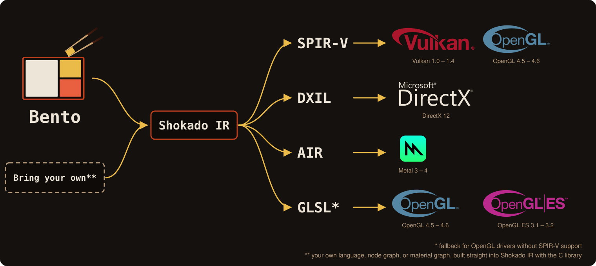

Structured SSA
Blocks belong to if and loop instructions rather than to a control flow graph. IR can be built, edited, printed, and verified from other programs.
Shokado is an IR and a set of tools that lower it directly to what your graphics API requires. The whole infrastructure is one C library without dependencies, small enough to vendor, and safe to run on untrusted input.
The shading language
Bento is the shading language built on Shokado. Barriers, subgroups, uniformity, and uber shaders are concepts it understands rather than thinly typed intrinsics and macros bolted onto C.
import std;
struct Pixel {
[[location(0)]] uv: f32x2,
}
struct Color {
[[color(0)]] rgba: f32x4,
}
[[stage(.Fragment)]]
fn main(px: Pixel) -> Color {
let corner = px.uv.x * px.uv.y;
let glow = std::smoothstep(0.0, 1.0, corner);
return { f32x4 { px.uv, glow, 1.0 } };
}Shokado IR lowers to SPIR-V, DXIL, AIR, and GLSL with no other compiler in between. Targets

An IR and a set of language agnostic tools that work on it. Bento is a small client on top of all that, much like clang is the C and C++ frontend for LLVM. Tools, IR and bytecode, Library
Blocks belong to if and loop instructions rather than to a control flow graph. IR can be built, edited, printed, and verified from other programs.
Modules can be linked at build time or at run time, left incomplete, and mixed with IR from any source.
Linker, optimizer, code generator, disassembler, validator, and stripper, for modules from any frontend.
Inlining, mem2reg, scalar replacement of aggregates, loop inversion, CSE, and comprehensive rule-driven algebraic simplifications. Competitive with spirv-opt and with the highest optimization level of DXC.
One C header. Memory, files, and diagnostics are provided by the host through callbacks.
No source or bytecode can crash the library, hang it, or run it out of memory without the failure being reported and handled. An input that proves otherwise is worth up to $500 USD under the bug bounty.